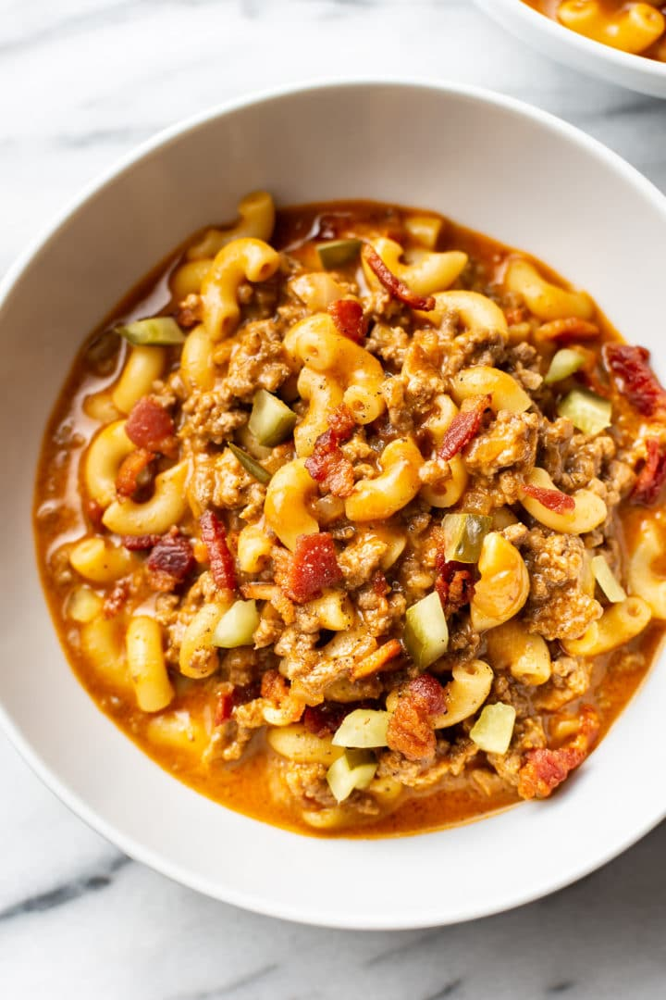

Home
Cheeseburger Macaroni

This cheeseburger macaroni recipe is made in one pot for a fast, easy, kid-friendly, and comforting weeknight dinner! It's ready in just 30 minutes.
Servings
4
Prep Time
5 Minutes
Cook Time
25 Minutes
Total Time
30 Minutes
Ingredients
- 4 strips bacon cut into small pieces
- 1 pound lean ground beef
- 1/2 medium onion chopped
- 3 tablespoons tomato paste
- 3 tablespoons tomato ketchup
- 1 tablespoon yellow mustard
- 1 teaspoon garlic powder
- 1 teaspoon Worcestershire sauce
- 3 cups beef broth
- 1 cup uncooked elbow macaroni
- 2 cups grated cheddar cheese
- 1/4 cup chopped pickles optional
Instructions
- Cut the bacon up (use kitchen shears to do this quickly) and add it to a soup pot/Dutch oven. Fry it over medium-high heat until crispy (about 10 min). Transfer the bacon to a paper towel lined plate but leave the bacon fat in the pot.
- Add the ground beef and onion to the pot. Cook it, breaking it up with your spoon as you go along, until browned (about 8 minutes). Spoon out most of the excess fat.
- Stir in the tomato paste, ketchup, mustard, garlic powder, Worcestershire sauce, and beef broth. Increase the heat to high and bring to a boil.
- Once it's boiling, add in the macaroni. Reduce the heat so it's not boiling like crazy (a rapid simmer is good). I cooked mine over medium heat. Let it cook uncovered until the pasta is tender and most of the liquid has been absorbed (about 13-15 minutes). Stir it every couple of minutes so nothing sticks to the bottom of the pot.
- Take the pot off the heat and stir in the cheddar and cooked bacon (I reserve some for topping the bowls). Season with salt & pepper as needed, and let it sit for a few minutes to absorb more of the liquid (if needed) and for the flavors to meld more. If you want to have a layer of cheese on top, stir in about 3/4 of the cheese and then sprinkle the rest on top and cover the pot so it melts faster.
- Serve with the chopped pickles if using.